생물분류기사(동물) (2017-09-23 기출문제)
1과목: 계통분류학
1. 다음 계통분류에 사용되는 용어 중 ( )안에 가장 적합한 것은?
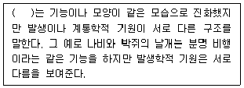
- hyphothesy
- ancestosy
- homology
- homoplasy
(정답률: 87%)

2. 딱정벌레목(Coleoptera)에 관한 설명으로 옳은 것은?
- 불완전변태를 한다.
- 홑눈은 있으나, 겹눈이 없다.
- 입은 핥는 형이다.
- 앞날개는 단단한 각질로 되어 있다.
(정답률: 78%)
3. 다음 중 환형동물에 포함되는 분류군은?
- 다판강
- 다지강
- 다모강
- 갑각강
(정답률: 82%)
4. 분류학의 아버지라고 불리며 이명법에 따라 명명하는 방식을 확립한 인물은?
- Lamarck
- Darwin
- Linnaeus
- Haeckel
(정답률: 85%)
5. 다음 중 국제식물명명규약상 식물군 이름은 기준군의 이름에 지정된 어미를 붙여야 하지만, 전통적으로 사용해오던 이름을 함께 사용해도 되는 것에 해당하지 않는 것은?
- 미나리과
- 벼과
- 인동과
- 물레나물과
(정답률: 68%)
6. 진체강동물이면서 후구동물에 해당하는 동물군은?
- 편형동물
- 선형동물
- 연체동물
- 극피동물
(정답률: 65%)
7. 동물분류군의 학명은 국제동물명명규약에 따라야 한다. 상과(superfamily)명의 어미에 사용되는 것은?
- -oidea
- -idae
- -inae
- -ini
(정답률: 58%)
8. 다음 중 벼과(화본과)의 특징으로 가장 적합한 것은?
- 줄기의 단면은 둥글며, 열매는 영과이다.
- 줄기의 단면은 삼각형이며, 열매는 수과이다.
- 줄기의 단면은 삼각형이며, 열매는 핵과이다.
- 줄기의 단면은 둥글며, 열매는 수과이다.
(정답률: 75%)
9. 열매의 종류에 따른 해당식물의 연결로 옳은 것은?
- 시과 -사과
- 수과 - 감
- 장과 - 밤
- 핵과 - 앵도
(정답률: 81%)
10. 콩꼬투리에 해당되는 열매의 주된 종류는?
- 취과(aggregate)
- 협과(legume)
- 삭과(capsule)
- 시과(samara)
(정답률: 83%)
11. 형태적으로는 거의 차이를 찾아내기가 어려울만큼 아주 근사하지만 생식적으로 격리된 종을 의미하는 것은?
- 동소종(sympatric species)
- 이소종(allopatric species)
- 생태종(eco species)
- 동포종(sibling species)
(정답률: 72%)
12. 속씨(피자)식물의 일반적인 특징과 거리가 먼 것은?
- 목부에 도관이 존재한다.
- 배주가 심피에 싸여서 암술을 이룬다.
- 수분은 주두상에서 수행한다.
- 중복수정을 하지 않는다.
(정답률: 88%)
13. 다음 중 종자식물에 해당되는 것은?
- 솔잎란식물
- 석송식물
- 속새식물
- 소철식물
(정답률: 66%)
14. 다음은 생물학적 종의 개념 설명이다. ( )안에 가 장 적합한 것은?
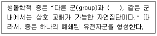
- 지리적으로 격리되고
- 생식적으로 격리되고
- 집단적으로 차이를 보이고
- 생체적으로 변화하고
(정답률: 88%)
15. 다음 연체동물문의 강 중 치설(radula)이 없는 것은?
- 부족강
- 복족강.
- 두족강
- 다판강
(정답률: 66%)
16. 식물종에 있어서 종의 학명의 구성요소가 아닌 것은?
- 속명
- 과명
- 종소명
- 명명자
(정답률: 75%)
17. 절지동물문의 거미강에 대한 설명으로 옳지 않은 것은?
- 다리는 4쌍이다.
- 몸은 체절적 구분이 없는 두흉부와 원시적으로 체절적 구분이 있는 복부의 2부분으로 구분된다.
- 협각이 잘 발달되었다.
- 머리에 2쌍의 촉각을 가지고 있다.
(정답률: 74%)
18. 다음 중 동물모식에 사용되는 용어에 관한 설명으로 옳지 않은 것은?
- 완모식(holotype) : 원저자가 학명을 지을 때 근거로 사용한 표본
- 총모식(syntype) : 원저자가 원기재시 완모식을 지정하지 않았을 때 모식계열의 모든 표본
- 후모식(lectotype) : 모식계열의 중에서 완모식을 제외한 모든 표본
- 신모식(neotype) : 완모식, 후모식, 총모식이 분실 또는 파괴되어 존재하지 않을 때 절대적인 필요에 의해 선정한 표본
(정답률: 69%)
19. 변이를 유전적 변이와 비유전적 변이로 분류할 때, 다음 중 비유전적 변이와 가장 거리가 먼 것은?
- 서식처에 따른 변이(생태표현형적 변이)
- 연령적 변이
- 암수모자이크 및 간성
- 외상성변이
(정답률: 88%)
20. ( )안에 들어갈 용어로 가장 적합한 것은?
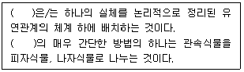
- 동정(Identification)
- 명명(Nomenclature)
- 분류(Classification)
- 검색(Searching)
(정답률: 91%)
2과목: 환경생태학
21. 다음 ( )안에 들어갈 가장 알맞은 용어는?
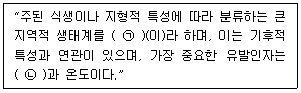
- ㉠ 군집, ㉡ 영양분
- ㉠ 군집, ㉡ 강우량
- ㉠ 생물군계, ㉡ 영양분
- ㉠ 생물군계, ㉡ 강우량
(정답률: 80%)
22. 일반적으로 중독 시 Hunter-Russel증후군으로 일컬어지며 사지 감각이상, 구음장애, 청력장애, 구심성 시야흡착, 소뇌성 운동실조 등의 증상을 수반하는 오염물질로 가장 적합한 것은?
- 카드뮴
- 납
- 메틸수은
- 비소
(정답률: 65%)
23. DNA, RNA 및 ATP의 구성성분이며, 척추동물의 뼈를 구성하는 필수 원소는?
- 질소
- 인
- 탄소
- 산소
(정답률: 86%)
24. 호수는 자체의 물리적 특성과 생물의 독특한 분포에 따라 연안대, 준조광대, 심연대 수역으로 나뉘어지는데 다음 영양단계 중 호수의 심연대에서 주로 분포하는 것은?
- 에너지
- 생산자
- 1차 소비자
- 분해자
(정답률: 85%)
25. 생물농축에 관한 설명 중 옳지 않은 것은?
- 장기간에 걸쳐 체내에 흡수되었다.
- 영양단계가 증가함에 따라 농축 정도가 커진다.
- 영양단계가 증가함에 따라 체내에서 분해된다..
- 전형적인 피해 사례로서 수은중독, 카드뮴중독, PCB중독 등이 있다.
(정답률: 91%)
26. 다음은 하천에 관한 설명이다. ( )안에 알맞은 용어는?
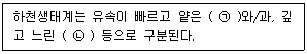
- ㉠ 소, ㉡ 삼각주
- ㉠ 여울, ㉡ 소
- ㉠ 소, ㉡ 여울
- ㉠ 삼각주, ㉡여울
(정답률: 78%)
27. 다음 중 수질오염으로 인한 현상으로 거리가 먼 것은?
- 부영양화 현상
- 용존산소의 고갈
- 적조현상
- 열섬현상(heat island)
(정답률: 92%)
28. 수용능력(carrying capacity)에 관한 설명으로 옳지 않은 것은?
- 비생물적 요인에 의해서도 영향을 받는다.
- 일정하게 고정되어 있다.
- 생물적 요인에 의해서도 영향을 받는다.
- 생물의 종류에 따라 다르다.
(정답률: 95%)
29. 두 개의 종은 자원이 제한된 조건 아래서 무기한 같이 살지 못하고 또 같은 방식으로 환경과 상호작용 할 수 없다는 것은?
- 경쟁배타의 원리
- 적자생존의 원리
- 기생
- 세력권다툼
(정답률: 92%)
30. 다음 중 점오염원과 거리가 먼 것은?
- 생활하수
- 산업시설의 폐수
- 축산폐수
- 도로의 우수
(정답률: 89%)
31. 온대 및 열대지방에서 나타나는 건조한 곳으로 연 강수량이 250mm 이하로 일교차가 심한 지역은?
- 툰드라
- 사막
- 타이가
- 열대우림
(정답률: 84%)
32. 국제적으로 중요한 습지 특히, 물새 서식처에 관한 습지 보전 국제협약은?
- 람사르협약
- 비엔나협약
- 몬트리올의정서
- 교토의정서
(정답률: 90%)
33. 다음 중 상류 하천의 종적 특성이 아닌 것은?
- 수심 - 깊다
- 침식 형태 - 하상 침식
- 용존 산소 - 다량
- 유량의 변화 - 크다
(정답률: 77%)
34. 각 종에 속하는 개체수가 얼마나 고르게 분포하는가를 나타내는 지수는?
- 풍부도
- 우점도
- 균등도
- 상대밀도
(정답률: 85%)
35. 어떤 특정 공간을 점유하는 같은 종의 생물이 만드는 집합체를 무엇이라고 하는가?
- 상관
- 개체군
- 생물군계
- 생태계
(정답률: 80%)
36. 개체군의 상호작용 중 “죽었거나 죽어가는 생물로부터 에너지를 얻는 상호 작용”을 무엇이라고 하는가?
- 기생
- 부생
- 공생
- 포식
(정답률: 82%)
37. 생태학적 천이에서 극상단계를 가장 잘 표현한 것은?
- 극상은 구체적인 개념으로 실제적으로 극상에 쉽게 도달한다.
- 천이의 중간단계이다.
- 극상은 기후적 요소와는 관련이 적다.
- 종의 경쟁, 구조 및 에너지 흐름이 안정된 상태이다.
(정답률: 84%)
38. ( )안에 공통으로 들어갈 알맞은 용어는?
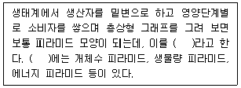
- 군집 피라미드
- 먹이 피라미드
- 생존 피라미드
- 생태 피라미드
(정답률: 82%)
39. 개체군을 감소시키는 데 있어서 혹독한 기후나 DDT 같은 살충제로 오염된 지역에서의 곤충 개체군의 감소 효과로 가장 적합한 것은?
- 밀도-비의존 효과(density-independent effect)
- 밀도-의존 효과(density-dependent effect)
- 생물적 개체군 효과(biotic population effect)
- 자연 선택 효과(natural selection effect)
(정답률: 74%)
40. 다음 중 폐기물의 해양투기로 인한 해양오염을 방지하기 위한 국제협약(의정서)은?
- 몬트리올 의정서
- 리우협약
- 도쿄의정서
- 런던협약
(정답률: 73%)
3과목: 형태학
41. 식물의 뿌리에서 측근(lateral root)의 발생기원이 되는 조직은?
- 표피조직
- 피층유조직
- 내초
- 내피
(정답률: 69%)
42. 다음 중 조류(Aves)의 일반적인 특성으로 옳지 않은 것은?
- 피부는 얇고 땀샘이 없다.
- 몸은 표피성 깃털로 덮여 있다.
- 발은 보통 5개의 발가락을 가진다.
- 다리에 비늘이 있다.
(정답률: 78%)
43. 다음 설명에 해당하는 상피조직의 종류는?
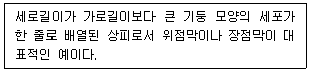
- 입방상피
- 단층원주상피
- 다층편형상피
- 단층편형상피
(정답률: 87%)
44. 생장층에 관한 설명으로 거리가 먼 것은?
- 온대지방에서는 보통 한 개의 생장층이 형성된다.
- 생장층은 초기에 생장한 춘재 부분과 후기에 생장한 추재 부분으로 구별된다.
- 추재와 다음 해에 형성된 춘재 사이에는 뚜렷한 경계선이 생기지만, 같은 해에 형성된 춘재와 추재 사이의 경계는 뚜렷하지 않다.
- 춘재의 세포는 추재에 비해 세포가 작고, 세포벽이 두껍고 치밀하게 배열되어 있다.
(정답률: 67%)
45. 후각조직 세포의 일반적인 특징으로 옳지 않은 것은?
- 분열 기능을 회복할 수 있다.
- 1차 세포벽이 균일하지 않게 두꺼워진다.
- 소성(plasticity)을 가지고, 지지작용을 한다.
- 완전히 성숙했을 때는 죽은 세포이다.
(정답률: 71%)
46. 조류의 소화기계로 단단하고 두꺼운 근육질로 전체적으로는 암홍색을 띠며, 먹이와 함계 섭취된 모래알이나 작은 돌에 의해 먹이를 분쇄하여 소화를 돕는 포유류의 위(Stomach)와 같은 기능을 가진 기관은?
- 소낭(Crop)
- 위강(Gastral Cavity)
- 사낭(Gizzard)
- 췌장(Pancreas)
(정답률: 67%)
47. 다음은 신경계에 관한 설명이다. ( )안에 가장 알맞은 것은?
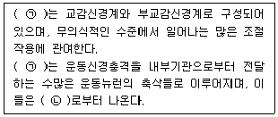
- ㉠ 중추신경계, ㉡ 소뇌
- ㉠ 중추신경계, ㉡ 척수
- ㉠ 자율신경계, ㉡ 소뇌
- ㉠ 자율신경계, ㉡ 척수
(정답률: 76%)
48. 일정한 기능을 가진 세포가 집단을 이루고 있는 것을 조직(Tissue)이라고 하며 동물조직은 4가지 기본조직(Primary Basic Tissue)으로 이루어져 있다. 이 기본조직 4가지에 해당하지 않는 것은?
- 지지조직(Supporting Tissue)
- 상피조직(Epithelial Tissue)
- 근육조직(Muscular Tissue)
- 신경조직(NervousTissue)
(정답률: 83%)
49. 다음 설명은 어떤 곤충에 관한 설명인가?
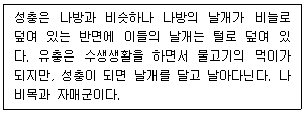
- 하루살이목
- 잠자리목
- 풀잠자리목
- 날도래목
(정답률: 78%)
50. 2기 목부 구조 중 주축계와 방사계에 관한 설명으로 거리가 먼 것은?
- 주축계는 통수요소, 섬유 및 유세포로 구성된다.
- 방사계는 통수요소 및 섬유세포로 구성된다.
- 주축계의 세포들은 줄기나 뿌리의 장축에 평행한 수직방향으로 배열되어 있다.
- 방사계는 줄기나 뿌리의 축에 직각이 되는 수평방향으로 배열되어 있다.
(정답률: 58%)
51. 뼈를 구성하는 3가지 기본물질과 거리가 먼 것은?
- 연골
- 골기질
- 골아세포
- 파골세포
(정답률: 72%)
52. 다음 나열된 기공복합체(stomatal complex)의 유형 중 특별한 형태의 부세포가 없으며, 공변세포는 보통의 표피세포들로 둘러싸여 있으며, 공변세포와 주변의 표피세포들 사이를 연결하는 원형질 연락사가 없는 형태는?
- 방사형(actinocytic type)
- 부등형(anisocytic type)
- 부재형(anomocytic type)
- 평행형(paracytic type)
(정답률: 75%)
53. 배를 먹을 때 그 과육에서 모래와 같은 것이 씹히는데 이것은 어떤 조직의 무슨 세포인가?
- 후벽조직 - 보강세포
- 후각조직 - 섬유세포
- 후각조직 - 보강세포
- 후벽조직 - 섬유세포
(정답률: 74%)
54. 다음과 같은 열매에 대한 설명으로 옳지 않은 것은?
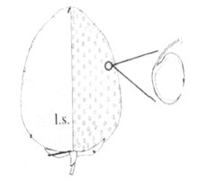
- 딸기에서 볼 수 있는 열매 유형으로 취과라고 한다.
- 우리가 먹는 부분은 화탁이 비후되어 육질화된 부분이다.
- 우리가 씨라고 부르는 부분은 실제로는 수과이다.
- 국화목 국화과의 여러해살이풀로서, 여러 개의 꽃이 발달하여 형성된 열매이다.
(정답률: 71%)
55. 과피(果皮, pericarp)는 대부분의 경우, 어느 부분이 발달된 것인가?
- 꽃잎(petal)
- 꽃받침(sepal)
- 씨방벽(ovary wall)
- 밑씨(ovule)
(정답률: 86%)
56. 곤충의 키틴질로 된 외골격 기능 및 역할에 관한 설명으로 거리가 먼 것은?
- 외부환경 변화에 예민하게 반응하는 기능을 가짐으로서, 몸의 수분증산을 돕는다.
- 근육의 부착점을 제공한다.
- 병원미생물 등 외부 침입자들로부터 몸을 보호한다.
- 외골격으로 인해 절지동물의 경우 계속 탈피를 해야 한다.
(정답률: 82%)
57. 다음은 가도관과 도관절에 나타나는 이차벽 구조의 패턴이다. 가장 알맞은 것은?
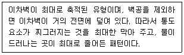
- 계문상
- 원문상
- 나선상
- 망문상
(정답률: 53%)
58. 다음은 파리목 곤충에 관한 설명이다. ( )안에 가장 적합한 용어는?
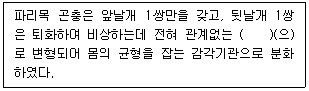
- 평형곤(halter)
- 반초시(반시초, helelytra)
- 초시(시초, elytra)
- 복시(tegmina)
(정답률: 86%)
59. 다음 중 골격근의 특징이 아닌 것은?
- 불수의근이다.
- 줄무늬를 가진다.
- 근소포체를 가진다.
- 뼈에 부착되어 있다.
(정답률: 79%)
60. 다음 설명으로 가장 적합한 동물은?
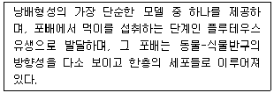
- 개구리
- 조류
- 성게
- 포유류
(정답률: 78%)
4과목: 보존 및 자원생물학
61. 다음 설명에 대한 가장 적합한 현상은?
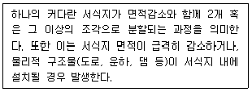
- 서식지 황폐화
- 서식지 사막화
- 서식지 단편화
- 서식지 보편화
(정답률: 89%)
62. 훼손된 자연생태계 교정방법(복원, 회복, 대체, 방치) 중 “복원(restoration)"에 관한 설명으로 가장 적합한 것은?
- 원래의 생태계로 회귀가 불가능한 경우 구조적으로 완전히 다르지만 자연 생태계의 기능을 원활히 수행하도록 하는 교정에 중점을 두는 행위
- 정확한 회귀는 아니지만 기능이나 구조에서 거의 유사한 상태로 회복시키는 것으로 자연 생태계의 기능이 잘 나타날 수 있도록 하는 것에 중점을 두는 행위
- 훼손된 환경에 대한 교정 노력이 적극적으로 수행되는 일련의 과정 중 원래 존재하던 생태로 정확히 회귀하는 것
- 생태계 스스로 원래의 모습으로 되돌아 갈 수 있도록 충분한 시간 동안 훼손된 지역을 그대로 두는 것
(정답률: 69%)
63. 다음은 생물의 종과 군집보호를 위한 우선 순위 선정기준이다. 가장 적합한 선정기준은?
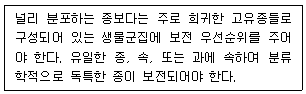
- 유용성
- 생태성
- 위험성
- 차별성
(정답률: 81%)
64. 야생생물 서식지 단편화가 초래하는 결과에 대한 설명으로 가장 거리가 먼 것은?
- 서식지의 단편화로 인해 야생 개체군이 사육 동물이나 식물과 접촉하는 기회가 생기게 된다.
- 단편화된 서식지는 면적당 임연부의 면적이 많아지고 종의 영속성을 촉진한다.
- 서식지의 단편화는 내부 서식지에 비해 가장자리의 면적을 상대적으로 급격히 증가시킨다.
- 산림이 단편화되면 산림 가장자리 지역의 바람이 강해지고 습도가 낮아지며 온도가 상승하여 산불이 발생할 가능성이 높아진다.
(정답률: 83%)
65. 핵심종(keystone species)의 설명으로 가장 적합한 것은?
- 핵심종은 군집 또는 생태계 내에서 개체수가 가장 많은 종으로 그 군집 또는 생태계를 지탱하는 중추적 역할을 하는 종이다.
- 핵심종은 생태계내의 영양단계상 주로 하부에 위치하여 상위 포식자와 하위 생산자 또는 초식동물들을 중간에서 조절하는 중추적 역할을 하는 종이다.
- 핵심종은 가장 하위 영양 단계의 생물군의 보전을 위해서 핵심종을 최대한으로 번창시킬 수 있도록 개체군의 크기를 조절해야만 한다.
- 군집 또는 생태계 내에서 핵심종이 사라지면 영양 단계가 붕괴되어 궁극적으로 그 군집 또는 생태계가 붕괴된다.
(정답률: 86%)
66. 특정 시간에 어떤 특정 공간을 공유하는 같은 종 개체들의 모임으로서 서로 유전정보를 교환할 수 있는 집단을 의미하는 것은?
- biome
- community
- population
- mortality
(정답률: 74%)
67. 식물 표본의 충해를 방지하기 위해 사용하는 약품으로 가장 거리가 먼 것은?
- 오존
- 이황화탄소가스
- 나프탈렌
- 사염화탄소의 혼합액
(정답률: 77%)
68. 다음 중 생물다양성의 보전 · 생물자원의 지속 가능한 이용 · 생물자원을 이용하여 얻어지는 이익을 공정하고 공평하게 배분할 것을 목적으로 한 국제협약은?
- UPOV : International Union for the Protection of New Varieties of Plants
- CITES : Convention on International Trade in Endangered Species of Wild Flora and Fauna
- KC : Kyoto Convention
- CBD : Convention on Biological Diversity
(정답률: 60%)
69. 보전(conservation)과 보존(preservation)은 생물다양성 유지와 자연자원 관리 등의 행위에 있어 가장 근간이 되는 개념들이다. 다음 중 보전에 관한 가장 적합한 설명은?
- 자연 자원의 계획적인 관리를 통해 자연적인 안정성과 현재의 여건에서 진화적인 변화를 유지하기 위한 행위
- 자연 자원에 대한 계획적 관리를 전제로 하되 특정개체, 집단 등의 구체적인 대상에 대한 행위
- 적응력이나 질병에 대한 내성 등과 같은 특정한 형질을 대상으로 하여 이를 유지 관리하는 행위
- 희귀종을 존속시키기 위해서 행해지는 도입, 또는 인공수정 등과 같은 인위적인 관리를 위한 일련의 행위
(정답률: 70%)
70. 한 종의 생존을 보장할 수 있는 최소한의 개체수를 무엇이라고 하는가?
- Most Valuable Population
- Minimum Variable Population
- Minimum Valuable Population
- Minimum Viable Population
(정답률: 65%)
71. 메타개체군(meta population)을 가장 적합하게 표현한 것은?
- 비교적 안정된 개체수를 지닌 개체군
- 이주와 관련된 일시적이고 유동적인 개체군
- 핵심 개체군의 주변에 존재하는 개체군
- 모든 개체군의 총합
(정답률: 72%)
72. 식물원에 관한 설명으로 가장 거리가 먼 것은?(오류 신고가 접수된 문제입니다. 반드시 정답과 해설을 확인하시기 바랍니다.)
- 열대지방의 식물종이 다양하므로 주요 식물원은 대부분 열대지방에 위치한다.
- 건조표본을 통해 식물의 분포나 서식지 요구도에 대한 정보를 제공한다.
- 대중에게 보전의 중요성을 교육시키는 역할을 수행한다.
- 희귀종과 위험종의 재배에 많은 비중을 두고 있다.
(정답률: 8%)
73. 기후변화로 인한 지구온난화의 증거와 가장 거리가 먼 것은?
- 종 분포범위 이동
- 식물의 때 이른 개화
- 해수면 상승
- 택지 면적의 증가
(정답률: 85%)
74. 특정오염물질은 지구 성층권의 오존층을 파괴하여 생물다양성 감소에 큰 영향을 미치고 있다. 다음 특정물질 중 오존 파괴지수가 가장 큰 물질은?
- CFC-114
- Halon-1301
- HCFC-132
- Halon-1211
(정답률: 69%)
75. 생물 군집과 생태계를 복원하는 방법 중 복원 비용이 너무 많이 들거나 예전의 복원 시도 노력이 실패하여 훼손된 지역을 그대로 두는 방법을 무엇이라 하는가?
- 방치
- 복원
- 회복
- 대체
(정답률: 92%)
76. 종다양도에 관한 설명으로 가장 거리가 먼 것은?
- 종다양도는 종풍부도와 각 종에 속하는 개체수가 얼마나 고르게 분포하는가를 나타내는 균등도를 동시에 나타내는 척도이다.
- 종다양도는 종의 이질성이라고도 말한다.
- 한 군집내에 다수의 종들이 비슷한 개체수로 출현하면 종다양도가 낮고, 소수의 종이 출현하거나 소수의 종이 상대적으로 많은 개체수를 차지하는 군집은 종다양도가 높다고 할 수 있다.
- 종다양도는 군집의 구성성분이 외부의 압력에 영향을 적게 받는 군집구조의 능력의 척도로 이용된다.
(정답률: 77%)
77. 다음 중 보전생물학의 이상적인 목표를 제시하는 가정과 가장 거리가 먼 것은?
- 생물다양성은 이로운 것이다.
- 개체군과 생물종의 때아닌 절멸은 이로운 현상이다.
- 생태적으로 복잡한 것이 좋다.
- 진화는 이로운 현상이다.
(정답률: 92%)
78. 다음 중 생물다양성의 3가지 범주에 포함되는 개념과 가장 거리가 먼 것은?
- 환경의 다양성
- 유전적 다양성
- 군집 및 생태계 다양성
- 종 다양성
(정답률: 81%)
79. 다음 중 보전생물학에 대한 설명으로 가장 거리가 먼 것은?
- 보전생물학은 개체군생물학, 분류학, 생태학 등이 중추를 이룬다.
- 보전생물학이란 생물다양성 붕괴의 위협에 대응하여 발전한 종합적인 과학이다.
- 보전생물학의 목적은 종, 군집 및 생태계에 대한 인간 활동을 명확히 이해하는데 있다.
- 보전생물학은 경제적인 요인들을 우선 순위로 하며 장기간에 걸친 생물보호를 기본 관심사로 삼는다.
(정답률: 76%)
80. 야생종을 위한 표본추출전략 중 종수준에서 수집의 우선 순위로 가장 거리가 먼 것은?
- 개체군과 개체의 수가 빠르게 감소하고 있는 종
- 자연으로 재도입될 수 있는 종
- 진화적 및 분류학적으로 유일한 종
- 현지에서의 보전이 불가능한 종
(정답률: 43%)
5과목: 자연환경관계법규
81. 국토의 계획 및 이용에 관한 법률 시행령상 광역도시계획 수립을 위해 그 밖에 대통령령이 정하는 기초조사 사항으로 가장 거리가 먼 것은?(오류 신고가 접수된 문제입니다. 반드시 정답과 해설을 확인하시기 바랍니다.)
- 국제적 협력강화를 위한 부대시설의 설치
- 국제적 협력강화를 위한 부대시설의 설치
- 기후 · 지형 · 자원 및 생태 등 자연적 여건
- 풍수해 · 지진 그 밖의 재해의 발생현황 및 추이
(정답률: 62%)
82. 생물다양성 보전 및 이용에 관한 법률 시행령에 의거, 환경부장관이 '국가 생물종 목록'을 구축 할 때, 필요한 자료와 가장 거리가 먼 것은?
- 생물종의 국명(國名) 및 학명
- 종별 생태적·분류학적 특징
- 생물종별 국외 분포 현황
- 조사자, 조사기간 및 조사방법
(정답률: 70%)
83. 야생생물 보호 및 관리에 관한 법률상 멸종위기 야생생물 Ⅰ급을 포획⦁채취⦁훼손하거나 고사시킨 자에 대한 벌칙기준은?
- 1년 이하의 징역 또는 100만원 이하의 벌금에 처한다.
- 2년 이하의 징역 또는 200만원 이하의 벌금에 처한다.
- 5년 이하의 징역 또는 500만원 이상 5천만원 이하의 벌금에 처한다.
- 10년 이하의 징역 또는 1억원 이하의 벌금에 처한다.
(정답률: 60%)
84. 환경정책기본법상 환경기준의 설정에 관한 사항으로 옳지 않은 것은?
- 국가는 환경기준을 설정하여야 하며, 환경 여건의 변화에 따라 그 적정성이 유지되도록 하여야 한
- 환경기준은 환경부령으로 정한다.
- 시·도지사는 지역환경기준을 설정하거나 변경한 경우에는 이를 지체 없이 환경부장관에게 보고하여야 한다.
- 시·도는 해당 지역의 환경적 특수성을 고려하여 필요하다고 인정할 때에는 해당 시·도의 조례로 환경기준보다 확대·강화된 별도의 지역환경기준을 설정 또는 변경할 수 있다.
(정답률: 55%)
85. 자연공원법령상 공원관리청이 공원구역에서 행위허가를 함에 있어 공원위원의 심의를 거쳐야 하는 경우(기준)에 해당하지 않는 것은?
- 부지면적이 1천제곱미터 이상인 시설을 설치하는 경우
- 도로·철도·궤도 등의 교통·운수시설을 1킬로미터 이상 신설하거나 1킬로미터 이상 확장 또는 연장하는 경우
- 만수면적이 10만제곱미터 이상이거나 총저수용량이 100만세제곱미터 이상이 되는 댐·하구언·저수지·보 등 수자원개발사업을 하는 경우
- 5천제곱미터 이상의 개간·매립·간척 그 밖의 토지형질변경을 하는 경우
(정답률: 50%)
86. 자연환경보전법규상 생태계보전협력금의 부과 납부에 관한 사항으로 옳지 않은 것은?
- 생태계보전협력금의 부과통지는 ⌜국고금관리법 시행규칙⌟ 의 서식에 따른다.
- 생태계보전협력금의 분할납부신청을 받은 시⦁도지사는 분할납부의 사유 등을 검토하여 신청을 받은 날부터 10일 이내에 그 처리결과를 신청인에게 알려야 한다.
- 국가⦁지방자치단체 및 ⌜공공기관의 운영에 관한 법률⌟ 에 따른 공공기관의 분할납부의 횟수는 2회 이하로 한다.
- 생태계보전협력금의 부과금액별 분할납부 횟수는 2억원 초과의 경우는 5회 이하로 한다.
(정답률: 56%)
87. 다음은 국토기본법상 중앙행정기관의 장 또는 지방자치단체의 장이 수립할 수 있는 지역계획에 관한 설명이다. ( )안에 알맞은 것은?
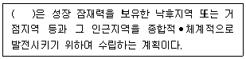
- 지구단위발전계획
- 종합개발계획
- 지역개발계획
- 수도권발전계획
(정답률: 56%)
88. 환경정책기본법령상 대기환경기준항목과 측정 방법, 기준치와의 연결이 옳은 것은? (단, 기준치는 1시간 평균치)
- 이산화질소(NO2) - 화학 발광법 - 0.06ppm 이하
- 아황산가스(SO2) - 적외선 형광법 - 0.10ppm 이하
- 오존(O3) - 자외선 광도법 - 0.10ppm 이하
- 일산화탄소(CO) - 베타선 흡수법 - 25ppm이하
(정답률: 53%)
89. 백두대간 보호에 관한 법률상 백두대간에 포함되는 산과 거리가 먼 것은?
- 금강산
- 지리산
- 소백산
- 대둔산
(정답률: 69%)
90. 다음은 국토의 계획 및 이용에 관한 법률상 도시⦁군관리계획 결정의 효력 발생에 관한 설명이다. ( )안에 알맞은 것은?
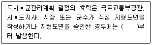
- 지형도면을 고시한 날
- 지형도면을 고시한 날로 7일 후
- 지형도면을 고시한 날로 15일 후
- 지형도면을 고시한 날로 30일 후
(정답률: 53%)
91. 다음은 야생생물 보호 및 관리에 관한 법률상 야생생물 보호 기본계획 수립과 멸종위기 야생생물의 지정주기 등에 관한 사항이다. ( )안에 가장 알맞은 수치는?
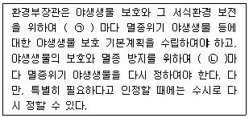
- ㉠ 5년, ㉡ 5년
- ㉠ 5년, ㉡ 2년
- ㉠ 2년, ㉡ 5년
- ㉠ 2년, ㉡ 2년
(정답률: 48%)
92. 자연공원법상 공원구역에서 공원사업 외의 행위로 대통령령으로 정하는 바에 따라 공언관리청의 허가를 받아야 하는 경우와 거리가 먼 것은?
- 나무를 베거나 야생식물을 채취하는 행위
- 물건을 쌓아 두거나 묶어 두는 행위
- 100명의 사람이 단체로 등산하는 행위
- 자갈을 채취하는 행위
(정답률: 86%)
93. 다음은 환경정책기본법령상 중앙정책위원회에 관한 사항이다. ( )안에 가장 적합한 인원수는?
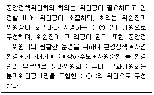
- ㉠ 5명 이상, ㉡ 25명 이내
- ㉠ 25명 이상, ㉡ 25명 이내
- ㉠ 5명 이상, ㉡ 50명 이내
- ㉠ 25명 이상, ㉡ 50명 이내
(정답률: 72%)
94. 생물다양성 보전 및 이용에 관한 법률상 국외반출승인을 받아야 하는 대상 생물자원이지만 승인을 받지 아니하고 반출승인대상 생물자원을 국외로 반출한 자에 대한 벌칙기준은?
- 3년 이하의 징역 또는 3천만원 이하의 벌금에 처한다.
- 2년 이하의 징역 또는 2천만원 이하의 벌금에 처한다.
- 1년 이하의 징역 또는 1천만원 이하의 벌금에 처한다.
- 5백만원 이하의 벌금에 처한다.
(정답률: 60%)
95. 국토의 계획 및 이용에 관한 법률상 지구단위계획수립 등에 관한 사항이다. 옳지 않은 것은?
- 지구단위계획은 도시의 정비⦁관리⦁보전⦁개발 등 지구단위계획구역의 지정 목적을 고려하여 수립한다.
- 지구단위계획은 주거⦁산업⦁유통⦁관광휴양⦁복합 등 지구단위계획구역의 중심기능을 고려하여 수립한다.
- 지구단위계획의 수립기준 등은 국토교통부령으로 정하는 바에 따라 국무총리가 정한다.
- 지구단위계획구역 및 지구단위계획은 도시⦁군관리계획으로 결정한다.
(정답률: 73%)
96. 독도 등 도서지역의 생태계 보전에 관한 특별법상 용어의 뜻이다. ( )안에 가장 알맞은 용어는?
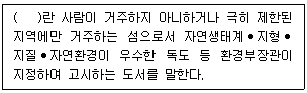
- 무인도서
- 우수도서
- 지정도서
- 특정도서
(정답률: 65%)
97. 습지보전법상 “국가·지방자치단체 또는 사업자가 습지보호지역 또는 습지개선지역 중 대통령령이 정하는 비율 이상에 해당하는 면적의 습지를 훼손하게 되는 경우에는 그 습지보호지역 또는 습지개선지역 중 공동부령으로 정하는 비율에 해당하는 면적의 습지가 존치되도록 하여야 한다.”라고 규정하고 있는데, 이 “공동부령이 정하는 비율”이라 함은 지정 당시의 습지보호지역 또는 습지개선지역 면적의 어느 정도를 말하는 것인가?
- 1/5이상 ~ 1/4 미만
- 1/4 이상 ~ 1/3 미만
- 1/3 이상 ~ 1/2 미만
- 1/2 이상
(정답률: 54%)
98. 야생생물 보호 및 관리에 관한 법률 시행규칙에서 멸종위기 야생생물 Ⅱ급에 해당하는 것은?
- 금개구리
- 비바리뱀
- 수원청개구리
- 표범
(정답률: 67%)
99. 자연환경보전법규상 위임업무 보고사항 중 “생태⦁경관보존지역 등의 토지매수실적”의 보고횟수 기준은?
- 수시
- 연1회
- 연2회
- 연4회
(정답률: 50%)
100. 자연환경보전법상 용어의 뜻 중 “사람의 접근이 사실상 불가능하여 생태계의 훼손이 방지되고 있는 지역중 군사상의 목적으로 이용되는 외에는 특별한 용도로 사용되지 아니하는 무인도로서 대통령령이 정하는 지역과 관할권이 대한민국에 속하는 날부터 2년간의 비무장지대”를 말하는 것은?
- 생태축
- 생태서식지
- 대체서식지
- 자연유보지역
(정답률: 77%)